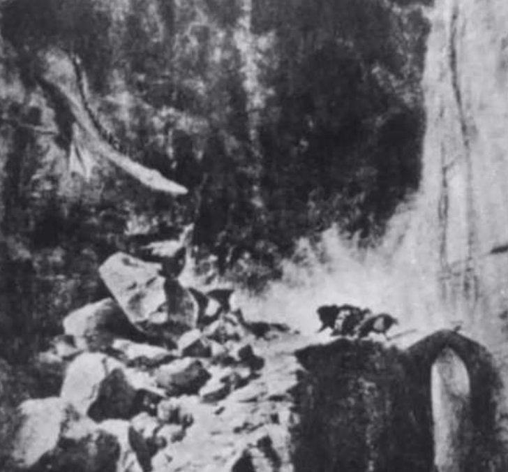

Lámina 1
Mide tolerancia a la frustración, control de impulsos. relación con las
figuras parentales, regresión, ansiedad, auto concepto, fortaleza
yoica y problemas con la ley.
Lámina 2
Se basa en la actitud hacia el rendimiento intelectual o diferentes
tipos de conflictos: rivalidad entre hermanos situación triangular,
armonía o desacuerdo familiar. Como también las metas y expectativas
hacia el futuro.

Lámina 3 VH
Mide identidad sexual, imagen corporal, suicidio,
muerte, agresividad y relaciones amorosas.

Lámina 3 NM
Mide temas de culpabilidad, tristeza y
sus posibles motivos.

Lámina 4
Mide relación de pareja, triangulación
y homosexualidad.
Lámina 5
Actitudes y expectativas respecto a la madre (vista como prohibida,
vigilante, solicita, etc). Y los entimientos y respuestas del sujeto
rente a ella (con frecuencia de tipo ansioso).

Lámina 6 VH
Permite la expresión de la actitud del sujeto hacia la figura
materna y la cualidad de la relación: culpa, dependencia, discordia,
protección, etc. Mide figura materna.
Lámina 6 NM
Frecuentemente se la ve como una relación hombre mujer al margen del
matrimonio. Mide Figura Paterna.

Lámina 7 VH
Los temas generalmente refieren a situaciones de ayuda,
consejo, confidencia o complicidad. Mide la relación del hombre con
el padre.
Lámina 7 NM
Puede representar la actitud de la mujer hacia la feminidad o al rol
materno. Mide la relación de la mujer con su madre.

Lámina 8 VH
La situación proyectada en la escena del fondo frecuentemente
representa un incidente afectivo real. Mide Metas con proyecto de vida,
muerte, suicidio o pensamiento mágico.

Lámina 8 NM
El contenido puede aludir a algo que
el sujeto echa de menos. Mide Introspección, análisis de la
situación actual, metas y soledad.

Lámina 8 VH
Puede evocar temas de fraternidad varonil (con o sin homosexualidad
latente) o de oposición al medio; actitud hacia la pasividad.
Mide identidad sexual y Asuntos Laborales.

Lámina 9 NM
Evoca temas de rivalidad femenina, rivalidad por afecto sexual, o
necesidad de conocimiento. Mide Relación mujer-mujer en las
mismas condiciones, envidia, gratitud y amistad.

Lámina 10
Temor de separación, dependenciarespecto de la figura parental de
mayor importancia.

Lámina 11
Mide impulsos

Lámina 12 VN
Provoca temas de ensoñación (a veces infantil). Expresión de deseos,
fantasías o aspiraciones.

Lámina 12 H
Permite al sujeto expresar sus sentimientos y esperanzas respecto
a la terapia. A veces señala la actitud hacia la dependencia pasiva:
homosexualidad, deferencia, obediencia en la relación entre varones.

Lámina 12 M
Conflicto de generaciones, actitud ante el envejecimiento, ante la figura
de la madre (hija), ante lo que la mujer llegará a ser o parecer.
Lámina 13 HM
Mide Sexualidad, salud, enfermedad y pobreza. Así como también sus fantasías
o temores (conscientes o inconscientes).

Lámina 13 V
Imagen de sí mismo, temas de soledad y abandono, reflexiones
acerca del futuro.
Lámina 13 N
Soledad, abandono, reflexiones acerca del futuro.

Lámina 14
Simbólica estar saliendo de la oscuridad hacia la. Luz o a la liberación. Representar temores,
ansiedad preocupaciones por amenazas (p. ej. de robo) o sentimientos de intimidad violada
(el sujeto se introduce ilícitamente -por la ventana- a un espacio personal).

Lámina 15
Mide Muerte y pensamiento lógico

Lámina 17 VH
Puede representar las esperanzas del
paciente de escapar a sus dificultades..
Lámina 17 NM
Puede reflejar tendencias represivas sentimientos de infelicidad y la
inclinación del sujeto a mantener esperanza o a ceder (suicidio).
Lámina 18 VH
Puede representar la fuerza del Súper-Yo, temores de
homosexualidad. Actitud hacia las toxicomanías (ebriedad) o agresión:
historias de ataque robo, socorro o arresto. El desenlace puede ser importante.

Lámina 18 NM
Puede representar tendencias o deseos agresivos o actitudes hacia
la agresión, celos, reacción a ser dominado, sentimientos de inferioridad.

Lámina 19
Puede poner en evidencia deseos o necesidades afectivas de
protección y cuidado.

Lámina 20
El tema puede reflejar sentimientos de soledad, abandono, rechazo,
etc. y sus posibles causas o las actitudes frente a estos contenidos.